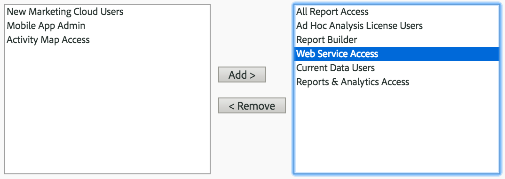
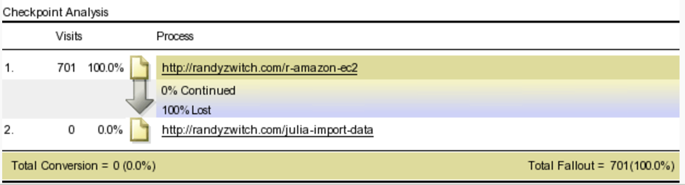
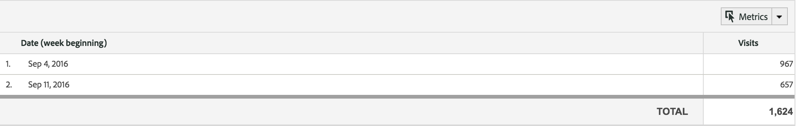
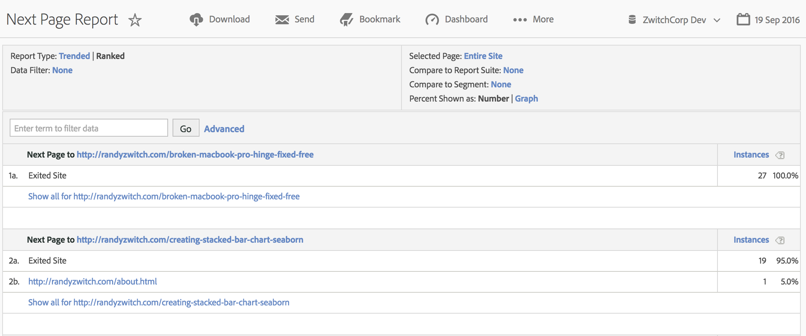
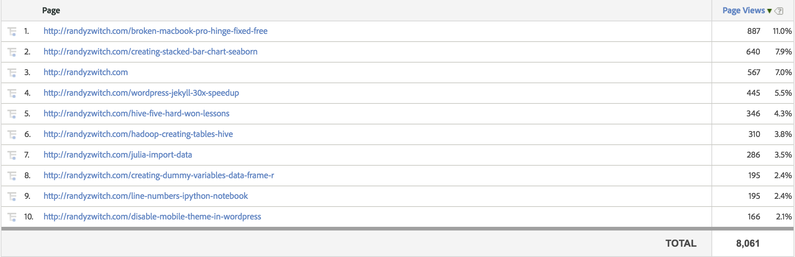
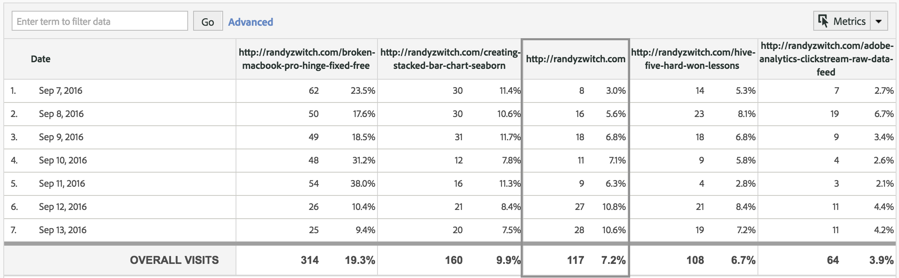

RSiteCatalyst is an R package for accessing the Adobe Analytics API. The focus of this package are analysts looking for a convenient, programmatic way for accessing their website data using the power of R.
RSiteCatalyst can be installed from CRAN as follows:
install.packages("RSiteCatalyst", type = "source")After installing RSiteCatalyst, you need to have Web Services Access enabled in the User Management -> Users -> Access menu in the Adobe Analytics Admin panel:

Additionally, you will either need to obtain your Web Services Credentials or register an OAuth2 application, which will be discussed in detail in the Authentication section.
Regardless of whether you choose the ‘legacy’ method for authentication or the newer OAuth2 method, the API will return the same data. Which method you choose depends on your company security requirements, familiarity with OAuth2 or your application-specific details.
The ‘legacy’ method of authenticating with the Adobe Analytics API requires knowing your User Name and Shared Secret, which can be obtained from the same User Management -> Users -> Access menu in the Admin panel where Web Services Access is granted.
With the User Name and Shared Secret values, you can start the authentication process in RSiteCatalyst through the SCAuth() function:
library(RSiteCatalyst)
SCAuth("username:company", "cd1d234dee56e8202da6f7d3213eb1ef")## [1] "Credentials Saved in RSiteCatalyst Namespace."Note that when the SCAuth() function is submitted, RSiteCatalyst doesn’t actually validate whether the credentials are correct (i.e. verify that the API will return an answer), other than to validate the the key and secret values have the proper format.
When submitting an API request, should your credentials not be accepted by the Adobe Analytics API, you will see the following message (or similar):
library(RSiteCatalyst)
SCAuth("username:company", "cd1d234dee56e8202da6f7d3213eb1ef")## [1] "Credentials Saved in RSiteCatalyst Namespace."GetReportSuites()## Error in ApiRequest(func.name = "Company.GetReportSuites") :
## ERROR: Bad Request - Unable to validate authentication.TBD
While not secure per se, to avoid putting your User Name and Shared Secret in the clear inside of an R script, you can place your credentials in the .Renviron environment file. This file is loaded each time R is loaded, setting global environment variables.
USER="username:company"
SECRET="cd1d234dee56e8202da6f7d3213eb1ef"Again, this is not truly ‘secure’, it is just security-through-obscurity. If you use this method, your SCAuth() call now becomes the following:
library(RSiteCatalyst)
SCAuth(Sys.getenv("USER"), Sys.getenv("SECRET"))## Warning in strptime(x, fmt, tz = "GMT"): unknown timezone 'zone/tz/2018c.
## 1.0/zoneinfo/America/New_York'## [1] "Credentials Saved in RSiteCatalyst Namespace."Not enough to stop a truly determined hacker, but enough so that credentials aren’t checked into version control or copy-pasted/shared across users.
One of the best use cases of RSiteCatalyst is accessing large amounts of data, whether that means running reports for a long time period or for many report suites at one time.
By running GetReportSuites() at the beginning of a session, not only do you get a quick refresher of the report suites contained in your Adobe Analytics, but you have a vector that you can pass to other RSiteCatalyst functions:
rs <- GetReportSuites()
rs## rsid site_title
## 1 zwitchdev ZwitchCorp Dev
## 2 zwitchjulia Julia Bloggers# Pass the list of report suite ids, not the whole data frame
props <- GetProps(rs$rsid)RSiteCatalyst is a community-driven, open-source effort, not an official package from Adobe. As such, bug fixes and improvements rely on a vibrant community of users and developers contributing their free time and resources.
If you encounter a bug when using RSiteCatalyst, please use the Issues section of the RSiteCatalyst GitHub repository to report your issue. When reporting an issue, please include as much information as possible, preferably a reproducible code example. The following information is also valuable for troubleshooting:
* R version
* Operating System and Version
* RSiteCatalyst version (please upgrade to newest version on CRAN before reporting a bug)
* Environment (RStudio, R command line, cron, etc.)While CRAN requires a valid email address for package submission, personalized help via the maintainer email address is not feasible and will not receive a response.
While RSiteCatalyst has near feature parity with the Adobe Analytics API Explorer on an analytics/data retrieval basis, this package intentionally does not provide lower-level features such as creating or deleting report suites, uploading SAINT classifications or other ‘development’ type features. While these types of features may be accepted into the package with a pull request of sufficient breadth and quality, they will not be a focus of the core developers.
If there is analytics functionality desired that is currently available in the Adobe Analytics API but not in RSiteCatalyst, please create an issue on the RSiteCatalyst GitHub repository, linking to the appropriate section of the Adobe Analytics API documentation. An explanation of your business goals and expected business value will go a long way towards convincing a volunteer to add the functionality.
Of course, if you’d like to have a feature added AND submit a pull request to RSiteCatalyst GitHub repository, the likelihood of seeing the feature added increases dramatically!
RSiteCatalyst is provided under the MIT License. Before contributing, please be sure you agree with the terms of the MIT license. All contributions merged into RSiteCatalyst become part of the MIT-licensed package whole; contributions with different license terms desired will not be accepted.
| Contributor | |
|---|---|
| Randy Zwitch | GitHub LinkedIn Twitter |
| Willem Paling | GitHub LinkedIn Twitter |
| Jowanza Joseph | GitHub LinkedIn Twitter |
| Adam Gitzes | GitHub LinkedIn Twitter |
| Shashi Khatri | GitHub LinkedIn Twitter |
| Diego Villuendas Pellicero | GitHub LinkedIn Twitter |
| Jason Morgan | GitHub LinkedIn Twitter |
| Johann De Boer | |
| leocwlau | [Gi | tHub](https://github.com/leocwlau) LinkedIn Twitter |
The following examples are blog posts and examples written by members of the community. No validation has been performed that the code examples contained within work for current and all future versions of RSiteCatalyst; coordinate with the author of the post should you find out-of-date code.
With a few exceptions, most of the Admin/Metadata functions take a report suite or a list of report suites as arguments and return the settings for a given report. These settings will mostly correspond with what administrators can see in the Adobe Analytics interface.
Cancels a previously submitted report request, and removes it from the processing queue.
CancelReport(12345678)Retrieves the activation status for each of the specified report suites.
GetActivation(rs$rsid)## rsid site_title activation
## 1 zwitchdev ZwitchCorp Dev TRUE
## 2 zwitchjulia Julia Bloggers TRUERetrieves the date a report suite was migrated from SiteCatalyst 14 to axle processing (version 15).
GetAxleStartDate(rs$rsid)## rsid site_title axle_start_date
## 1 zwitchdev ZwitchCorp Dev 2014-02-20
## 2 zwitchjulia Julia Bloggers 2015-01-10Retrieves a list of supported currency codes for each of the specified report suites.
GetBaseCurrency(rs$rsid)## rsid site_title base_currency
## 1 zwitchdev ZwitchCorp Dev USD
## 2 zwitchjulia Julia Bloggers USDRetrieves the base URL assigned to each of the specified report suites.
GetBaseURL(rs$rsid)## rsid site_title base_url
## 1 zwitchdev ZwitchCorp Dev http://www.randyzwitch.com
## 2 zwitchjulia Julia Bloggers http://www.juliabloggers.comRetrieves a list of bookmarks for the authenticated user. Parameters folder_limit and folder_offset are optional, and only necessary if the total bookmark count exceeds 500, which is the limit. Use them to select a certain range of folders out of the entire set.
GetBookmarks()## folder_name folder_id owner bookmark_name bookmark_id rsid
## 1 TestFolder 2444942 rzwitch TestBookmark 28473595 zwitchdev
## 2 Another Folder 2444946 rzwitch Test2 28473698 zwitchdevRetrieves the calculated metrics assigned to each of the specified report suites.
gcm <- GetCalculatedMetrics(rs$rsid)
head(gcm)## rsid site_title formula_name formula friendly_formula
## 1 zwitchdev ZwitchCorp Dev PV Per Visit [10] / [visits] [10] / [Visits]
## 2 zwitchjulia Julia Bloggers PV Per Visit [10] / [visits] [10] / [Visits]
## decimal_places formula_id type
## 1 0 f:1089420 numeric
## 2 0 f:1091439 numericRetrieves a list of classifications (associated with the specified element) for each of the specified report suites.
gcl <- GetClassifications(rs$rsid)
head(gcl)## rsid site_title id element_name
## 1 zwitchdev ZwitchCorp Dev page Page
## 2 zwitchdev ZwitchCorp Dev trackingcode Tracking Code
## 3 zwitchdev ZwitchCorp Dev trackingcode Tracking Code
## 4 zwitchdev ZwitchCorp Dev firsttouchchannel First Touch Marketing Channel
## 5 zwitchdev ZwitchCorp Dev firsttouchchannel First Touch Marketing Channel
## 6 zwitchdev ZwitchCorp Dev lasttouchchannel Last Touch Marketing Channel
## classification_name description type
## 1 JuliaPages Pages with Julia in the URL text
## 2 Creative Elements text
## 3 Campaigns text
## 4 First Touch Cost numeric_currency
## 5 First Touch Budget numeric_currency
## 6 Last Touch Cost numeric_currency
## date_enabled metric_id
## 1 FALSE <NA>
## 2 FALSE <NA>
## 3 TRUE <NA>
## 4 NA div_mult_1_221
## 5 NA div_mult_3_221
## 6 NA div_mult_2_223gcmr <- GetClickMapReporting(rs$rsid)
head(gcmr)## rsid allow_configuration all_clickmap_enabled
## 1 zwitchdev TRUE FALSE
## 2 zwitchdev TRUE FALSE
## 3 zwitchdev TRUE FALSE
## 4 zwitchdev TRUE FALSE
## 5 zwitchdev TRUE FALSE
## 6 zwitchdev TRUE FALSE
## clickmap_v3_download_enabled selected_metric can_upgrade_30_to_31 id
## 1 FALSE 6 FALSE 1
## 2 FALSE 6 FALSE 2
## 3 FALSE 6 FALSE 3
## 4 FALSE 6 FALSE 4
## 5 FALSE 6 FALSE 5
## 6 FALSE 6 FALSE 6
## metric
## 1 Revenue
## 2 Orders
## 3 Units
## 4 Carts
## 5 Cart Views
## 6 ClicksRetrieves the custom calendar for each of the specified report suites.
GetCustomCalendar(rs$rsid)## rsid site_title calendar_type
## 1 zwitchdev ZwitchCorp Dev gregorian
## 2 zwitchjulia Julia Bloggers gregorianRetrieves all the dashboards for the authenticated web services user, with bookmarks included. Parameters dashboard_limit and dashboard_offset are optional, and only necessary if the total bookmark count exceeds 500, which is the limit. Use them to select a certain range of bookmarks out of the entire set.
gdb <- GetDashboards()
head(gdb)## name id owner grid .id X1
## 1 Site Overview 826576 rzwitch 3x2 name Key Metrics
## 2 Site Overview 826576 rzwitch 3x2 id 15625769
## 3 Site Overview 826576 rzwitch 3x2 rsid zwitchdev
## 4 Site Overview 826576 rzwitch 3x2 displayInfo <NA>
## 5 Site Overview 826576 rzwitch 3x2 displayInfo <NA>
## 6 Site Overview 826576 rzwitch 3x2 displayInfo <NA>
## X2 X3 X4 X5
## 1 Bounce Rate on Top Pages Referrer Types Report Suite Totals Countries
## 2 15625767 15625770 15625771 15625768
## 3 zwitchdev zwitchdev zwitchdev zwitchdev
## 4 <NA> <NA> <NA> <NA>
## 5 <NA> <NA> <NA> <NA>
## 6 <NA> <NA> <NA> <NA>
## X6 row col rowspan colspan graph summary table
## 1 Search Keywords - All <NA> <NA> NA NA <NA> NA <NA>
## 2 15625772 <NA> <NA> NA NA <NA> NA <NA>
## 3 zwitchdev <NA> <NA> NA NA <NA> NA <NA>
## 4 <NA> 0 0 1 1 TRUE FALSE TRUE
## 5 <NA> 0 1 1 1 FALSE FALSE TRUE
## 6 <NA> 0 2 1 1 TRUE FALSE TRUEReturns if data warehouse is enabled for the requested report suites.
GetDataWarehouseDisplay(rs$rsid)## rsid site_title data_warehouse_display
## 1 zwitchdev ZwitchCorp Dev all-logins-have-access
## 2 zwitchjulia Julia Bloggers all-logins-have-accessRetrieves the default page for each of the specified report suites.
GetDefaultPage(rs$rsid)## rsid site_title default_page
## 1 zwitchdev ZwitchCorp Dev
## 2 zwitchjulia Julia BloggersReturns whether ad hoc analysis (formerly Discover) is enabled for the requested report suites.
GetDiscoverEnabled(rs$rsid)## rsid site_title discover_enabled
## 1 zwitchdev ZwitchCorp Dev TRUE
## 2 zwitchjulia Julia Bloggers TRUERetrieves the commerce level for each of the specified report suites.
GetEcommerce(rs$rsid)## rsid site_title ecommerce
## 1 zwitchdev ZwitchCorp Dev TRUE
## 2 zwitchjulia Julia Bloggers TRUERetrieves a list of possible valid elements for a report.
elem <- GetElements(rs$rsid)
head(elem)## id name correlation subrelation
## 1 accountsummary Report Suite Totals TRUE FALSE
## 2 activity Activity FALSE TRUE
## 3 browser Browser TRUE TRUE
## 4 browserheight Browser Height TRUE FALSE
## 5 browsertype Browser Type TRUE TRUE
## 6 browserwidth Browser Width TRUE FALSE
## max_pathing_steps rsid
## 1 NA zwitchdev
## 2 NA zwitchdev
## 3 NA zwitchdev
## 4 NA zwitchdev
## 5 NA zwitchdev
## 6 NA zwitchdevRetrieves the commerce variables for each of the specified report suites.
evar <- GetEvars(rs$rsid)
head(evar)## name type id expiration_type
## 1 Tracking Code text_string trackingcode week
## 2 Logged In (evar1) text_string evar1 visit
## 3 Visitor Type (evar2) text_string evar2 visit
## 4 Custom eVar 3 text_string evar3 visit
## 5 Custom eVar 4 text_string evar4 visit
## 6 Custom eVar 5 text_string evar5 visit
## expiration_custom_days allocation_type description enabled report_suite
## 1 1 most_recent_last <NA> NA zwitchdev
## 2 1 most_recent_last TRUE zwitchdev
## 3 1 most_recent_last TRUE zwitchdev
## 4 1 most_recent_last TRUE zwitchdev
## 5 1 most_recent_last TRUE zwitchdev
## 6 1 most_recent_last TRUE zwitchdevGets configuration details for a specific feed, including feed status, FTP delivery location, and the data columns that are included in the feed.
feed <- GetFeed(1111111)
head(feed)## feed_id rsid name interval timezone status
## 1 1111111 zwitchdev RSiteCatalyst Data Feed daily US/Eastern Active
## 2 1111111 zwitchdev RSiteCatalyst Data Feed daily US/Eastern Active
## 3 1111111 zwitchdev RSiteCatalyst Data Feed daily US/Eastern Active
## 4 1111111 zwitchdev RSiteCatalyst Data Feed daily US/Eastern Active
## 5 1111111 zwitchdev RSiteCatalyst Data Feed daily US/Eastern Active
## 6 1111111 zwitchdev RSiteCatalyst Data Feed daily US/Eastern Active
## ftp_host ftp_path fields
## 1 ftp.somewhere.com / accept_language
## 2 ftp.somewhere.com / browser
## 3 ftp.somewhere.com / connection_type
## 4 ftp.somewhere.com / country
## 5 ftp.somewhere.com / date_time
## 6 ftp.somewhere.com / domainReturns a list of data feeds for the specified report suites, including delivery status.
GetFeeds(rs$rsid)## feed_id rsid interval timezone name
## 1 1111111 zwitchdev daily US/Eastern RSiteCatalyst Data Feed
## ftp_host ftp_path
## 1 ftp.somewhere.com /
## activity
## 1 29786961, 2016-09-15 04:00:00, 2016-09-16 04:00:00, deliveredgf <- GetFunctions()
head(gf)## id name
## 1 col-sum Column Sum
## 2 ls-intercept-quadratic Quadratic regression: Intercept
## 3 sqrt Square Root
## 4 ls-pred-linear Linear regression: Predicted Y
## 5 exp Exponent
## 6 if If
## description
## 1 Column Sum
## 2 Quadratic regression: Y = ( a + b X ) ^ 2, Returns a.
## 3 Square Root
## 4 Linear regression: Y = a X + b. Returns Y.
## 5 Exponent
## 6 If the value of the condition parameter is non-zero (true), then the result will be the value of the then parameter. Otherwise it will be the value of the else parameter.
## required optional example
## 1 column1 <NA>
## 2 x, y include-zeros <NA>
## 3 column1 <NA>
## 4 x, y include-zeros <NA>
## 5 column1 <NA>
## 6 condition, then, else <NA>Retrieves the geography segmentation for the requested report suites.
GetGeoSegmentation(rs$rsid)## rsid site_title geo_segmentation vista_enabled
## 1 zwitchdev ZwitchCorp Dev TRUE FALSE
## 2 zwitchjulia Julia Bloggers TRUE FALSERetrieves a list of a company’s permission groups.
gg <- GetGroups()
head(gg)## group_id group_name
## 1 191835 Activity Map Access
## 2 191836 Ad Hoc Analysis License Users
## 3 191843 All Report Access
## 4 191841 Analysis Workspace Access
## 5 191837 Current Data Users
## 6 191838 Mobile App Admin
## group_description
## 1 NOTE: Activity Map is only available for Adobe Analytics Standard or Premium customers. Point product (SiteCatalyst) customers can add users to this group, but those users will not be able to download, install, or use Activity Map. Point product customers can continue to use the legacy ClickMap tool for visual, in-context analytics.
## 2 Access to Ad Hoc Analysis
## 3 Access to all Report Suites, Dimensions, Metrics, Channel Reports, Anomaly Detection, Current Data, Analysis Workspace, My Recommended Reports and Dashboard Reportlets
## 4 Access to Analysis Workspace
## 5 Access to the Current Data Reports
## 6 Administrator Access to Adobe Mobile App UIRetrieves the internal URL filters for each of the specified report suites.
GetInternalURLFilters(rs$rsid)## rsid site_title internal_url_filters
## 1 zwitchdev ZwitchCorp Dev www.randyzwitch.com
## 2 zwitchdev ZwitchCorp Dev randyzwitch.com
## 3 zwitchjulia Julia Bloggers www.randyzwitch.com
## 4 zwitchjulia Julia Bloggers randyzwitch.comReturns a list of IP addresses excluded from website tracking for each of the specified report suites.
GetIPAddressExclusions(rs$rsid)## rsid site_title
## 1 zwitchdev ZwitchCorp Dev
## 2 zwitchjulia Julia BloggersRetrieves the IP Address Obfuscation setting for each of the specified report suites.
GetIPObfuscation(rs$rsid)## rsid site_title ip_obfuscation
## 1 zwitchdev ZwitchCorp Dev none
## 2 zwitchjulia Julia Bloggers noneRetrieves a list of key visitors for each of the specified report suites.
GetKeyVisitors(rs$rsid)## rsid site_title key_visitors
## 1 zwitchdev ZwitchCorp Dev
## 2 zwitchjulia Julia BloggersRetrieves the list variables for the requested report suites.
GetListVariables(rs$rsid)## rsid site_title name allocation_type enabled
## 1 zwitchdev ZwitchCorp Dev List Variable 1 full FALSE
## 2 zwitchdev ZwitchCorp Dev List Variable 2 full FALSE
## 3 zwitchdev ZwitchCorp Dev List Variable 3 full FALSE
## 4 zwitchjulia Julia Bloggers List Variable 1 full FALSE
## 5 zwitchjulia Julia Bloggers List Variable 2 full FALSE
## 6 zwitchjulia Julia Bloggers List Variable 3 full FALSE
## value_delimiter max_values description id expiration_custom_days
## 1 , 250 1 0
## 2 , 250 2 0
## 3 , 250 3 0
## 4 , 250 1 0
## 5 , 250 2 0
## 6 , 250 3 0
## expiration_type
## 1 never
## 2 never
## 3 never
## 4 never
## 5 never
## 6 neverRetrieves the localization (multi-byte character) settings for each of the specified report suites.
GetLocalization(rs$rsid)## rsid site_title localization
## 1 zwitchdev ZwitchCorp Dev TRUE
## 2 zwitchjulia Julia Bloggers TRUERetrieves information about the specified user account.
GetLogin("rzwitch")## login first_name last_name title email phone_number
## 1 me Randy Zwitch me@example.com 1111111111
## is_admin must_change_password is_temp temp_start_date temp_end_date
## 1 TRUE FALSE FALSE
## group_names
## 1 All Report Access,Ad Hoc Analysis License Users,Report Builder,Web Service Access,All Report Access,Discover License Users,Current Data Users,Reports & Analytics Access,Analysis Workspace AccessReturns the currently defined Marketing Channel expiration dates for the specified report suites.
GetMarketingChannelExpiration(rs$rsid)## rsid days
## 1 zwitchdev 30
## 2 zwitchjulia 30Returns the currently defined Marketing Channel rules for the specified report suites.
gmcrs <- GetMarketingChannelRules("zwitchdev")
head(gmcrs)## rsid ruleset_id channel_id junction type
## 1 zwitchdev 3885 1 all search_tracking_code
## 2 zwitchdev 3886 2 all search_tracking_code
## 3 zwitchdev 3887 4 all page_qs_param
## 4 zwitchdev 3888 3 all page_qs_param
## 5 zwitchdev 3889 5 all referring_domain
## 6 zwitchdev 3890 8 all referring_domain
## query_string_parameter rule_id hit_attribute_type
## 1 5489 is_paid_search
## 2 5490 is_natural_search
## 3 email 5491 page_qs_param
## 4 display 5492 page_qs_param
## 5 5493 external_referring_domain
## 6 5494 external_referring_root_domain
## hit_attribute_query_string_parameter operator
## 1 equals
## 2 equals
## 3 email exists
## 4 display exists
## 5 contains
## 6 equals
## matches
## 1
## 2
## 3
## 4
## 5 r-bloggers.com,badhessian.org
## 6 facebook.com,linkedin.com,twitter.com,plus.google.com,orkut.com,friendster.com,livejournal.com,blogspot.com,wordpress.com,friendfeed.com,myspace.com,digg.com,reddit.com,stumbleupon.com,twine.com,yelp.com,mixx.com,delicious.com,tumblr.com,disqus.com,intensedebate.com,plurk.com,slideshare.net,backtype.com,netvibes.com,mister-wong.com,diigo.com,flixster.com,youtube.com,vimeo.com,12seconds.tv,zooomr.com,identi.ca,jaiku.com,flickr.com,imeem.com,dailymotion.com,photobucket.com,fotolog.com,smugmug.com,classmates.com,myyearbook.com,mylife.com,tagged.com,brightkite.com,ning.com,bebo.com,hi5.com,yuku.com,cafemom.com,xanga.comReturns the currently defined Marketing Channels for the specified report suites.
gmc <- GetMarketingChannels(rs$rsid)
head(gmc)## rsid name type color channel_id enabled
## 1 zwitchdev Paid Search online 0F59A9 1 TRUE
## 2 zwitchdev Natural Search online E07804 2 TRUE
## 3 zwitchdev Display online 609D09 3 TRUE
## 4 zwitchdev Email online D12112 4 TRUE
## 5 zwitchdev Affiliate online 813AA7 5 TRUE
## 6 zwitchdev Direct online 056F73 6 TRUE
## channel_breakdown override_last_touch_channel
## 1 0 FALSE
## 2 0 FALSE
## 3 0 FALSE
## 4 0 FALSE
## 5 0 FALSE
## 6 0 TRUERetrieves a list of possible valid elements for a report.
metrics <- GetMetrics(rs$rsid)
head(metrics)## id name type decimals
## 1 activityconversions Activity Conversions number 0
## 2 activityimpressions Activity Impressions number 0
## 3 averagepagedepth Average Page Depth number 0
## 4 averagetimespentonpage Average Time Spent on Page time 1
## 5 averagetimespentonsite Average Time Spent on Site time 1
## 6 averagevisitdepth Average Visit Depth number 0
## formula rsid
## 1 <NA> zwitchdev
## 2 <NA> zwitchdev
## 3 <NA> zwitchdev
## 4 <NA> zwitchdev
## 5 <NA> zwitchdev
## 6 <NA> zwitchdevRetrieves the Mobile Application Tracking settings for the requested report suites.
GetMobileAppReporting(rs$rsid)## allow_configuration all_lifecycle_enabled all_messaging_v1_enabled
## 1 TRUE FALSE FALSE
## all_messaging_v2_enabled all_messaging_v3_enabled all_appstore_enabled
## 1 FALSE FALSE FALSE
## all_location_enabled lifecycle_version align_visits_enabled
## 1 FALSE 0 0
## deeplink_enabled places_enabled all_messaging_core_enabled
## 1 FALSE FALSE FALSERetrieves the paid search settings for each of the specified report suites.
GetPaidSearchDetection(rs$rsid)## rsid site_title search_engine query_string operator
## 1 zwitchdev ZwitchCorp Dev ::any:: ps contains
## 2 zwitchjulia Julia Bloggers ::any:: ps containsRetrieves the permanent traffic settings for each of the specified report suites.
GetPermanentTraffic(rs$rsid)## rsid site_title submit_date login start_date hits_per_day
## 1 zwitchdev ZwitchCorp Dev 2015-01-12 rzwitch 2015-01-19 600
## 2 zwitchjulia Julia Bloggers 2015-01-10 rzwitch 2015-01-11 300GetPreviousServerCalls(rs$rsid)## rsid average_server_calls peak_day_server_calls_date
## 1 zwitchdev 0.0000000000 1969-12-31
## 2 zwitchjulia 0.0000000000 1969-12-31
## peak_day_server_calls
## 1 0
## 2 0GetPrivacySettings(rs$rsid)## rsid site_title inferred_optout_non_mobile
## 1 zwitchdev ZwitchCorp Dev 0
## 2 zwitchjulia Julia Bloggers 0
## inferred_optout_mobile
## 1 0
## 2 0Retrieves the props (traffic variables) for the specified report suites.
props <- GetProps(rs$rsid)
head(props)## id name enabled description pathing_enabled
## 1 prop1 Post Title (prop1) TRUE TRUE
## 2 prop2 Page ID (prop2) TRUE FALSE
## 3 prop3 Page Type (prop3) TRUE FALSE
## 4 prop4 Page Sub Type (prop4) TRUE FALSE
## 5 prop5 Post Category (prop5) TRUE FALSE
## 6 prop6 Post Tags (prop6) TRUE FALSE
## list_enabled participation_enabled case_insensitive
## 1 FALSE TRUE FALSE
## 2 FALSE TRUE FALSE
## 3 FALSE TRUE FALSE
## 4 FALSE TRUE FALSE
## 5 TRUE TRUE FALSE
## 6 TRUE TRUE FALSE
## case_insensitive_date_enabled list_delimiter report_suite
## 1 NA <NA> zwitchdev
## 2 NA <NA> zwitchdev
## 3 NA <NA> zwitchdev
## 4 NA <NA> zwitchdev
## 5 NA , zwitchdev
## 6 NA , zwitchdevReturns a list of reports in a company’s report queue.
GetQueue()## [1] "There are no reports in the Report Queue"## list()‘source’ parameter present and set to ‘realtime’. Note that Real-Time reports do not have to be queued, they can run immediately using Report.Run.
GetRealTimeReport("zwitchdev", "instances")## name year month day hour minute instances
## 1 2017-03-03T15:36:40-0500 2017 3 3 15 36 1
## 2 2017-03-03T15:41:40-0500 2017 3 3 15 41 0
## 3 2017-03-03T15:46:40-0500 2017 3 3 15 46 5
## 4 2017-03-03T15:51:40-0500 2017 3 3 15 51 6
## 5 2017-03-03T15:56:40-0500 2017 3 3 15 56 1
## 6 2017-03-03T16:01:40-0500 2017 3 3 16 1 1
## 7 2017-03-03T16:06:40-0500 2017 3 3 16 6 3
## 8 2017-03-03T16:11:40-0500 2017 3 3 16 11 1
## 9 2017-03-03T16:16:40-0500 2017 3 3 16 16 1
## 10 2017-03-03T16:21:40-0500 2017 3 3 16 21 0
## 11 2017-03-03T16:26:40-0500 2017 3 3 16 26 0
## 12 2017-03-03T16:31:40-0500 2017 3 3 16 31 1Returns the metrics that are configured to provide real time data.
GetRealTimeSettings("zwitchdev")## rsid site_title name min_granularity ui_report
## 1 zwitchdev ZwitchCorp Dev testxyz 1 TRUE
## 2 zwitchdev ZwitchCorp Dev test111 1 TRUE
## 3 zwitchdev ZwitchCorp Dev testsep242014 1 TRUE
## metric primary.dimension secondary.dimension tertiary.dimension
## 1 instances prop2 searchenginekeyword geocountry
## 2 instances prop2 searchenginekeyword geocountry
## 3 instances page searchenginekeyword geocountryRetrieves the name, associated report type, and report description for the supplied bookmark ID. This report description can then be used to retrieve report data via the Report API. An error is returned for unsupported bookmark types.
GetReportDescription("15625765")## name reportType reportSuiteID dateFrom dateTo
## 1 TestBookmark overtime zwitchdev 2017-03-01 2017-03-31
## dateGranularity metrics
## 1 day pageviews, visits, uniquevisitorsRetrieves a list of permission groups assigned to the specified report suite.
GetReportSuiteGroups("zwitchdev")## rsid site_title groupid group_name
## 1 zwitchdev ZwitchCorp Dev 191843 All Report Access
## description
## 1 Access to all Report Suites, Dimensions, Metrics, Channel Reports, Anomaly Detection, Current Data, Analysis Workspace, My Recommended Reports and Dashboard Reportlets
## type
## 1 0Retrieves all report suites associated with the requesting company.
GetReportSuites()## rsid site_title virtual
## 1 zwitchdev ZwitchCorp Dev NA
## 2 zwitchjulia Julia Bloggers NA
## 3 vrs_zwitch0_vrs1 zwitchdevVRS TRUE
## 4 vrs_zwitch0_zwitchdevvrs zwitchdevVRS2 TRUERetrieves the scheduled traffic increase settings for the specified report suites.
GetScheduledSpike(rs$rsid)## [1] "No scheduled spikes For This Report Suite"Retrieves the segments that are available in one or more report suites.
segments <- GetSegments(rs$rsid)
head(segments)## id name folder
## 1 5433e4e6e4b02df70be4ac63 Visits from Social
## 2 54adfe3de4b02df70be5ea08 Visits from Apple Browsers
## 3 5538547ae4b0b5455b976a99 Compound
## 4 s300005752_58403cbfe4b0bcef55f6e6b5 Last 7 days
## 5 s300005752_58403d17e4b0bcef55f6e6b6 Social
## 6 5433e4e6e4b02df70be4ac63 Visits from Social
## class suite_enabled read_only report_suite
## 1 FALSE FALSE zwitchdev
## 2 FALSE FALSE zwitchdev
## 3 FALSE FALSE zwitchdev
## 4 FALSE FALSE zwitchdev
## 5 FALSE FALSE zwitchdev
## 6 FALSE FALSE zwitchjuliaRetrieves the site title (friendly name) for each of the specified report suites.
GetSiteTitle(rs$rsid)## rsid site_title
## 1 zwitchdev ZwitchCorp Dev
## 2 zwitchjulia Julia BloggersRetrieves the success events for each of the specified report suites.
events <- GetSuccessEvents(rs$rsid)
head(events)## id name description type default_metric participation
## 1 event1 Custom 1 counter FALSE disabled
## 2 event2 Custom 2 counter FALSE disabled
## 3 event3 Custom 3 counter FALSE disabled
## 4 event4 Custom 4 counter FALSE disabled
## 5 event5 Custom 5 counter FALSE disabled
## 6 event6 Custom 6 disabled FALSE disabled
## serialization polarity visibility report_suite site_title
## 1 always_record positive NA zwitchdev ZwitchCorp Dev
## 2 always_record positive NA zwitchdev ZwitchCorp Dev
## 3 always_record positive NA zwitchdev ZwitchCorp Dev
## 4 always_record positive NA zwitchdev ZwitchCorp Dev
## 5 always_record positive NA zwitchdev ZwitchCorp Dev
## 6 always_record positive NA zwitchdev ZwitchCorp Dev
## ecommerce_level
## 1 enabled
## 2 enabled
## 3 enabled
## 4 enabled
## 5 enabled
## 6 enabledRetrieves the creation template for each of the specified report suites.
GetTemplate(rs$rsid)## rsid site_title template
## 1 zwitchdev ZwitchCorp Dev NA
## 2 zwitchjulia Julia Bloggers ZwitchCorp DevGetTimeStampEnabled(c("zwitchdev", "zwitchjulia"))## rsid timestampenabled
## 1 zwitchdev FALSE
## 2 zwitchjulia FALSERetrieves the Time Zone setting for each of the specified report suites.
GetTimeZone(rs$rsid)## rsid site_title time_zone
## 1 zwitchdev ZwitchCorp Dev US/Eastern
## 2 zwitchjulia Julia Bloggers US/EasternReturns the tracking server and namespace for the specified report suite. Only accepts a single report suite, as all report suites within an account will have same tracking server.
GetTrackingServer("zwitchdev")## namespace tracking_server
## 1 zwitchcorp zwitchcorp.or1.sc.omtrdc.netRetrieves the transaction ids storage enable for the requested report suites.
GetTransactionEnabled(rs$rsid)## rsid site_title transaction
## 1 zwitchdev ZwitchCorp Dev 0
## 2 zwitchjulia Julia Bloggers 0Retrieves the unique visitor variable setting for the specified report suites.
GetUniqueVisitorVariable(rs$rsid)## rsid site_title unique_visitor_variable
## 1 zwitchdev ZwitchCorp Dev ::none::
## 2 zwitchjulia Julia Bloggers ::none::Retrieves version access for the company of the authenticated user.
GetVersionAccess()## AdobeProducts
## 1 sc13_5
## 2 sc14
## 3 sc15
## 4 dsc2Retrieves video measurement settings.
GetVideoSettings(rs$rsid)## rsid site_title core_enabled ad_tracking_enabled
## 1 zwitchdev ZwitchCorp Dev FALSE FALSE
## 2 zwitchjulia Julia Bloggers FALSE FALSE
## chapter_tracking_enabled quality_tracking_enabled using_custom_variables
## 1 FALSE FALSE FALSE
## 2 FALSE FALSE FALSE
## video_name_evar content_type_evar video_time_event video_views_event
## 1 NA NA NA NA
## 2 NA NA NA NA
## video_completes_event
## 1 NA
## 2 NAGet definition of virtual report suite (parent report suite and segments applied)
GetVirtualReportSuiteSettings("vrs_zwitch0_vrs1")## rsid parent_rsid segment_list
## 1 vrs_zwitch0_vrs1 zwitchdev All_VisitsList processing rules for a report suite, along with behaviors that define the rule.
#No processing rules defined
ViewProcessingRules("zwitchdev")## rsid title comment rules actions
## 1 zwitchdevThe functions in this section represent the types of information a user can retrieve from the Adobe Analytics UI. However, in most cases, the API via RSiteCatalyst can retrieve more data than is displayed in the web interface.
Note that because of the extensive number of keyword arguments for each function, it’s not feasible to show examples of all functionality. Please see the Examples section above or the detailed documentation within the RSiteCatalyst R manual.
Used for creating inline segments for use in Queue* functions. This is a convenience function to create the proper formatting for the required JSON object, it does not call the API itself.
vistor_segment <- BuildClassificationValueSegment(element,
search.keywords,
classification,
search.type)Selects the metrics and elements (dimensions) on which you want Real-Time reports enabled. This is a convenience function to create the proper formatting for the required JSON object, it does not call the API itself.
Use the returned list from this function as argument(s) in SaveRealTimeSettings.
report.test1 <- BuildRealTimeReportStructure(report.name="test123",
metric="instances",
elements = c("prop2", "searchenginekeyword", "geocountry"))
report.test2 <- BuildRealTimeReportStructure(report.name="test456",
metric="instances",
elements = c("prop2", "searchenginekeyword", "geocountry"),
min.granularity = "5")
report.test3 <- BuildRealTimeReportStructure(report.name="test789",
metric="instances",
elements = c("prop2", "searchenginekeyword", "geocountry"),
min.granularity = "5",
ui.report=FALSE)#TBD#TBDQueueDatawarehouse is a method that can both schedule Data Warehouse reports (like in the Adobe Analytics interface), as well as return reports back in the R interface as calculated by Data Warehouse (developmental). For the most part, users should pass the enqueueOnly=TRUE parameters with the ftp parameter to send reports to the FTP.
API:
# Because report sent to FTP, returns the report.id value
QueueDataWarehouse("zwitchdev",
"2016-11-01",
"2016-11-07",
c("visits", "pageviews"),
c("page"),
enqueueOnly=TRUE,
ftp = list(host = Sys.getenv("FTP", ""),
port = "21",
directory = "/DWtest/",
username = Sys.getenv("FTPUSER", ""),
password = Sys.getenv("FTPPW", ""),
filename = "myreport.csv")
)## [1] 1661786899This method generates the underlying data for a Fallout/Pathing report within Adobe Analytics. The API method supports both visits and pageviews as metrics.
Adobe Analytics Interface: 
API:
QueueFallout("zwitchdev",
"2016-08-01",
"2016-12-31",
metric="visits",
element="page",
c("http://randyzwitch.com/r-amazon-ec2", "http://randyzwitch.com/julia-import-data"))## [1] "Requesting URL attempt #1"
## [1] "Received fallout report."## name
## 1 http://randyzwitch.com/r-amazon-ec2
## 2 http://randyzwitch.com/julia-import-data
## url visits segment.id segment.name
## 1 http://randyzwitch.com/r-amazon-ec2 768
## 2 http://randyzwitch.com/julia-import-data 0This method is analogous to the “Key Metrics” report within Adobe Analytics. Note that the API method does not return the total row, just the metrics by the time breakdown.
Adobe Analytics Interface: 
API:
QueueOvertime("zwitchdev", "2016-09-07", "2016-09-13", "visits", date.granularity = "week")## [1] "Requesting URL attempt #1"
## [1] "Requesting URL attempt #2"
## [1] "Received overtime report."## datetime name year month day
## 1 2016-09-07 Wed. 7 Sep. 2016 - Sat. 10 Sep. 2016 2016 9 7
## 2 2016-09-11 Sun. 11 Sep. 2016 - Tue. 13 Sep. 2016 2016 9 11
## segment.id segment.name visits
## 1 967
## 2 657QueuePathing is the API method that calculates the underlying data for NextPage, Fallout and other path-related reports within Adobe Analytics.
Adobe Analytics Interface: 
API:
pathpattern <- c("::anything::", "::anything::")
QueuePathing("zwitchdev",
"2016-09-19",
"2016-09-19",
metric="pageviews",
element="page",
pathpattern,
top = 5)## [1] "Requesting URL attempt #1"
## [1] "Requesting URL attempt #2"
## [1] "Received pathing report."## step.1
## 1 http://randyzwitch.com/broken-macbook-pro-hinge-fixed-free
## 2 Entered Site
## 3 Entered Site
## 4 http://randyzwitch.com/creating-stacked-bar-chart-seaborn
## 5 http://randyzwitch.com/julia-import-data
## step.2 count
## 1 Exited Site 27
## 2 http://randyzwitch.com/broken-macbook-pro-hinge-fixed-free 27
## 3 http://randyzwitch.com/creating-stacked-bar-chart-seaborn 20
## 4 Exited Site 19
## 5 Exited Site 17
## segment.id segment.name
## 1
## 2
## 3
## 4
## 5QueueRanked represents the data from a ranked report within Adobe Analytics, where one or more elements is specified with no dateGranularity. Note that the API method does not return the total row, just the metrics by the breakdown(s) specified.
Adobe Analytics Interface: 
QueueRanked("zwitchdev", "2016-10-01", "2016-10-31", "pageviews", "page", top = 10)## [1] "Requesting URL attempt #1"
## [1] "Requesting URL attempt #2"
## [1] "Received ranked report."## name
## 1 http://randyzwitch.com/broken-macbook-pro-hinge-fixed-free
## 2 http://randyzwitch.com/creating-stacked-bar-chart-seaborn
## 3 http://randyzwitch.com
## 4 http://randyzwitch.com/wordpress-jekyll-30x-speedup
## 5 http://randyzwitch.com/hive-five-hard-won-lessons
## 6 http://randyzwitch.com/hadoop-creating-tables-hive
## 7 http://randyzwitch.com/julia-import-data
## 8 http://randyzwitch.com/creating-dummy-variables-data-frame-r
## 9 http://randyzwitch.com/line-numbers-ipython-notebook
## 10 http://randyzwitch.com/disable-mobile-theme-in-wordpress
## url pageviews
## 1 http://randyzwitch.com/broken-macbook-pro-hinge-fixed-free 887
## 2 http://randyzwitch.com/creating-stacked-bar-chart-seaborn 640
## 3 http://randyzwitch.com 567
## 4 http://randyzwitch.com/wordpress-jekyll-30x-speedup 445
## 5 http://randyzwitch.com/hive-five-hard-won-lessons 346
## 6 http://randyzwitch.com/hadoop-creating-tables-hive 310
## 7 http://randyzwitch.com/julia-import-data 286
## 8 http://randyzwitch.com/creating-dummy-variables-data-frame-r 195
## 9 http://randyzwitch.com/line-numbers-ipython-notebook 195
## 10 http://randyzwitch.com/disable-mobile-theme-in-wordpress 166
## segment.id segment.name
## 1
## 2
## 3
## 4
## 5
## 6
## 7
## 8
## 9
## 10QueueSummary does not map to an interface report per se; rather, QueueSummary provides the total calculation row for many reports within Adobe Analytics. It is this method that will provide ’unique` calculations such as visitors, which would be incorrectly summed across an element such as page views.
QueueSummary(rs$rsid, "2016-09-01", "visits")## [1] "Requesting URL attempt #1"
## [1] "Received summary report."## period reportsuite url visits
## 1 Thu. 1 Sep. 2016 zwitchdev 294
## 2 Thu. 1 Sep. 2016 zwitchjulia 113QueueTrended is similar to a QueueOvertime report, except instead of just having a metric by time granularity, you can specify an element to trend. One notable feature for the API method is that it removes the restriction of five element values to be trended over time (i.e. Top 5 pages over time)
Adobe Analytics Interface: 
API:
QueueTrended("zwitchdev", "2016-09-07", "2016-09-13", "visits", "page", selected = c("http://randyzwitch.com"))## [1] "Requesting URL attempt #1"
## [1] "Received trended report."## datetime name url visits
## 1 2016-09-07 http://randyzwitch.com http://randyzwitch.com 8
## 2 2016-09-08 http://randyzwitch.com http://randyzwitch.com 16
## 3 2016-09-09 http://randyzwitch.com http://randyzwitch.com 18
## 4 2016-09-10 http://randyzwitch.com http://randyzwitch.com 11
## 5 2016-09-11 http://randyzwitch.com http://randyzwitch.com 9
## 6 2016-09-12 http://randyzwitch.com http://randyzwitch.com 27
## 7 2016-09-13 http://randyzwitch.com http://randyzwitch.com 28
## segment.id segment.name
## 1
## 2
## 3
## 4
## 5
## 6
## 7Selects the metrics and elements (dimensions) on which you want real time reports enabled. Realtime configuration changes take 15 minutes to be reflected in reports.
WARNING: This function allows you to change the settings in your Adobe Analytics UI for all users, so be sure this is what you want to do. Additionally, submitting this function with only one report will mean other reports are deleted, you’re NOT just changing a single report.
SaveRealTimeSettings(reportsuite.ids = "", report1 = list(),
report2 = list(), report3 = list())SCAuth("username:company", "cd1d234dee56e8202da6f7d3213eb1ef")A function for advanced users, for the case where a user feels that submitting a JSON request to the Report.Queue API endpoint would be easier than using one of the pre-defined functions from RSiteCatalyst.
report <- SubmitJsonQueueReport("valid JSON string")